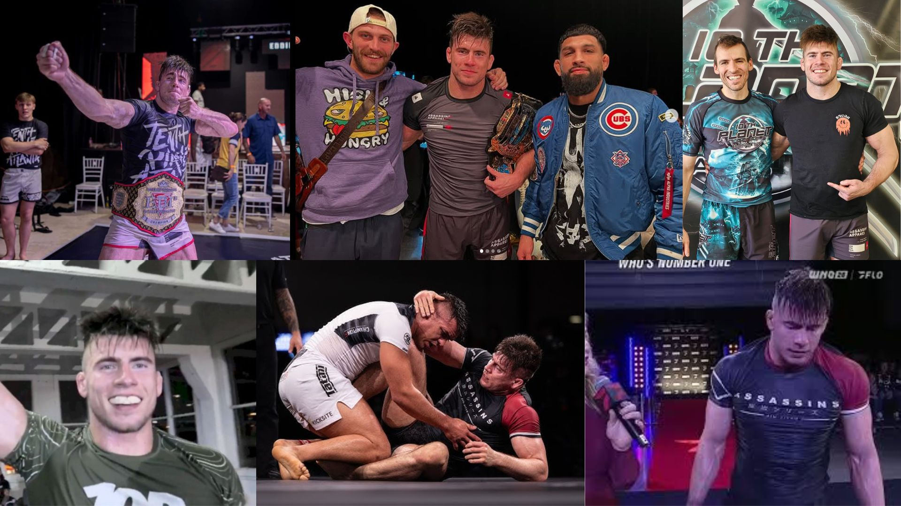
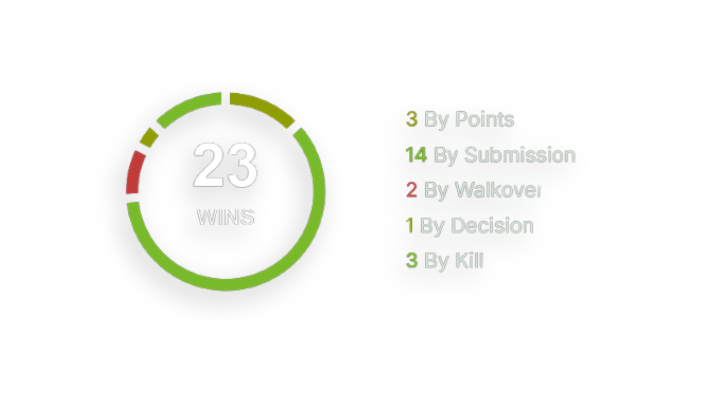
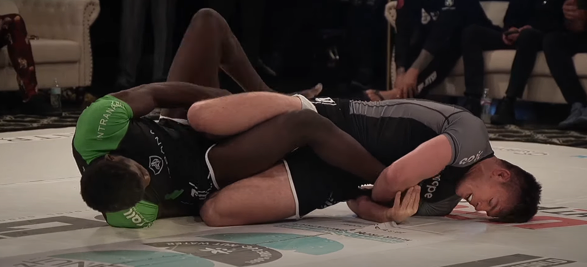
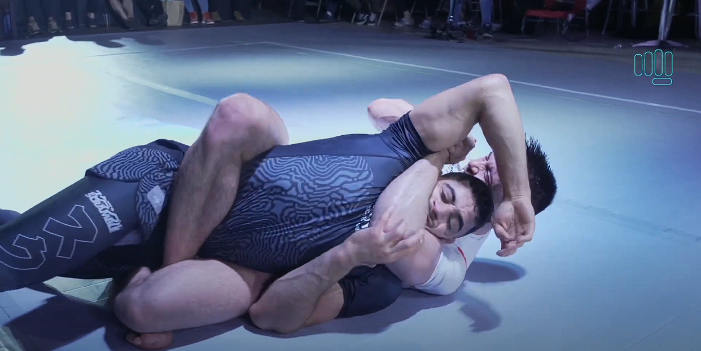
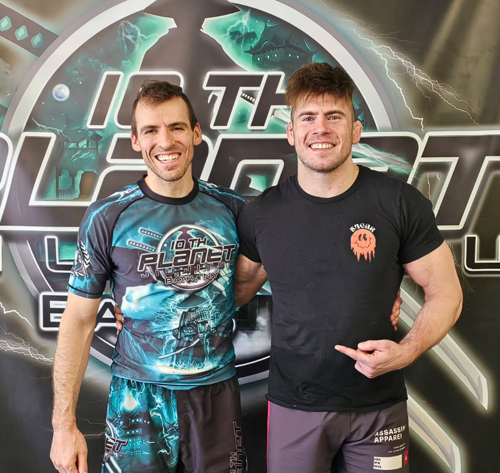
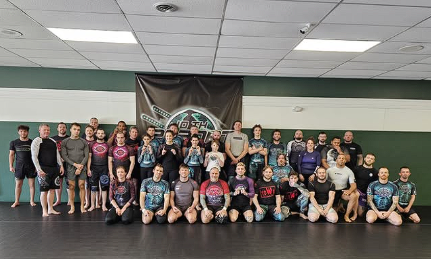

His Story
Ryan Aitkens is a prominent American Brazilian Jiu-Jitsu (BJJ) black belt, born on October 12, 1993, in Marietta, Georgia.
He began his martial arts journey at 15, initially exploring kickboxing before transitioning to BJJ under Eddie Camden.
After gaining experience in MMA and competing in the gi circuit with Alliance Atlanta, Aitkens shifted his focus to no-gi grappling, training under Sean Applegate at 10th Planet Atlanta.
He earned his black belt in December 2022, and continues to make a name for himself on the international stage.
Stats
Favorite Submission Moves
|

Heelhook |

Rear Naked Choke |
Facts

During middle school, Ryan played Lacrosse, but after becoming a victim of bullying in his mid-teens, he became interested in martial arts. Influenced by the movie Never Back Down and K1/MMA fighter Mirko “Crocop”, Aitken joined a local MMA club offering Kickboxing classes. Although striking was his initial focus, he quickly became passionate about Jiu-Jitsu.
|  |  |
Currently affiliated with the 10th Planet Bath Martial Arts Gym.